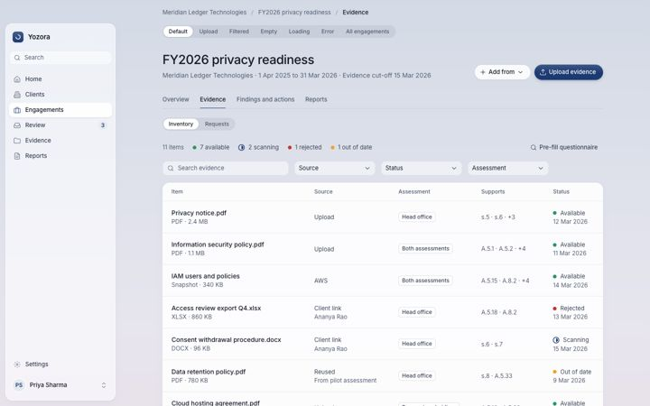

Approval walk-through
Seven batches, 61 screens. Open each screen and look it over. Under each group are a few things I need you to confirm. Each one says what the design does, and what I suggest. Ticks and notes stay in this browser only. Add ?dark to any screen link to see dark mode; every screen has a state bar to flip empty, loading and error states.
Decisions that apply to every screen
Tick if you agree with my suggestion.
Shell and firm
Home, clients, client detail, login, firm settings.


Decisions for this group
Tick a box if you agree with my suggestion. If you disagree or are unsure, leave it unticked and say why in the notes.
Engagements
Engagement list, detail, new engagement, integrated reports, remediation tracker, permanent purge.


Decisions for this group
Tick a box if you agree with my suggestion. If you disagree or are unsure, leave it unticked and say why in the notes.
Assessment, scope and questionnaire
Hub with framework tabs, scope, questionnaire, sections, question cards, wizard, screening, follow-ups.


Decisions for this group
Tick a box if you agree with my suggestion. If you disagree or are unsure, leave it unticked and say why in the notes.
Evidence
Evidence inventory, pre-fill questionnaire (desk review), evidence detail and cited text, reuse from another assessment, pull from AWS, workpaper.

Evidence inventoryOpen · Dark · new


Decisions for this group
Tick a box if you agree with my suggestion. If you disagree or are unsure, leave it unticked and say why in the notes.
Analysis, report and review
Analysis states, report, release, basis and sign-off, conclusions, conclusion card, requirement card, review queue, findings, finding card.


Decisions for this group
Tick a box if you agree with my suggestion. If you disagree or are unsure, leave it unticked and say why in the notes.
RFI, versions and client-facing
RFI, client links, report versions, comparison, statement of applicability, client upload, expired link.


Decisions for this group
Tick a box if you agree with my suggestion. If you disagree or are unsure, leave it unticked and say why in the notes.
System states
Menus, modals, toasts, skeletons, empty states, 404, 500, htmx swaps, dark dense screen, mobile shell.


Decisions for this group
Tick a box if you agree with my suggestion. If you disagree or are unsure, leave it unticked and say why in the notes.